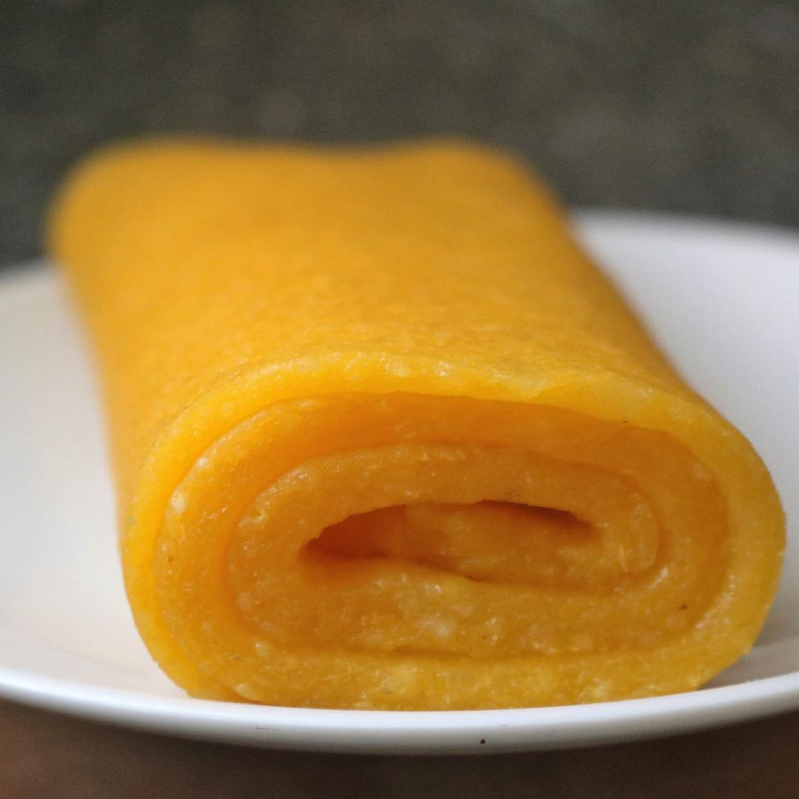

Description
Eba is a West African food most commonly eaten in Nigeria. It is a staple food as it is a "swallow" It is made with processed cassava called garri and hot water. It is usually paired with Nigerian soups such as Okra, Ewedu, Gbegiri, Efo riro, Egusi soup and others. Eba can be made from White or Yellow garri according to your taste.
I will teach you how to make eba in a bowl and then serve it in a round shape or as eba rolls :)
Steps
Making Eba in a bowl
- Boil Water to 100 degrees celsius (Boiling point)
- Pour the hot water into a metal bowl
- Evenly sprinkle the garri onto the surface of the water
- Let the mixture sit for about 2 minutes
- Use a wooden spatula/spoon to turn it in a circular motion until it is smooth and without lumps
- Get another bowl and rinse it with cold/lukewarm water
- Transfer the eba into the new bowl and then holding the base of the bowl, move it in circular motions. The eba molds to the shape of the bowl and soon possesses a round shape.
- Serve as desired ;)
Note: If the mixture is too watery, add more garri and if it is too stiff, add more hot water.
Making Eba Rolls
- On your working surface, cut the cling film or plastic bag into 2
- Place the eba on one of the pieces and then cover it with the other piece
- Use the rolling pin to spread the eba as evenly as possible
- Remove the cover piece and cut out the shape of a rectangle
- Fold it from one end to another, tucking in one end
The result should look something like this:
